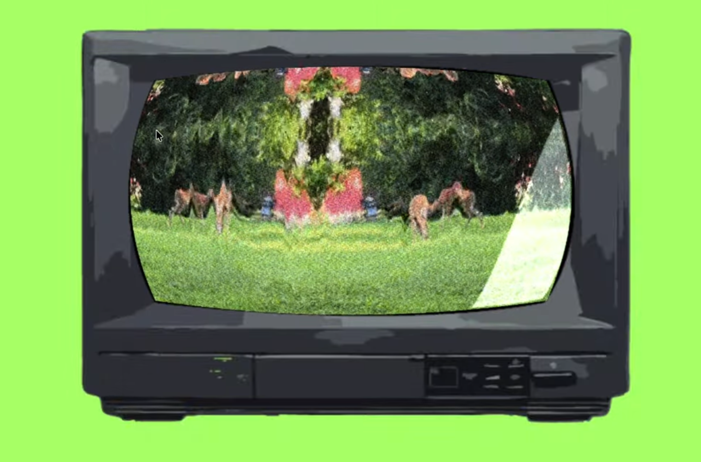
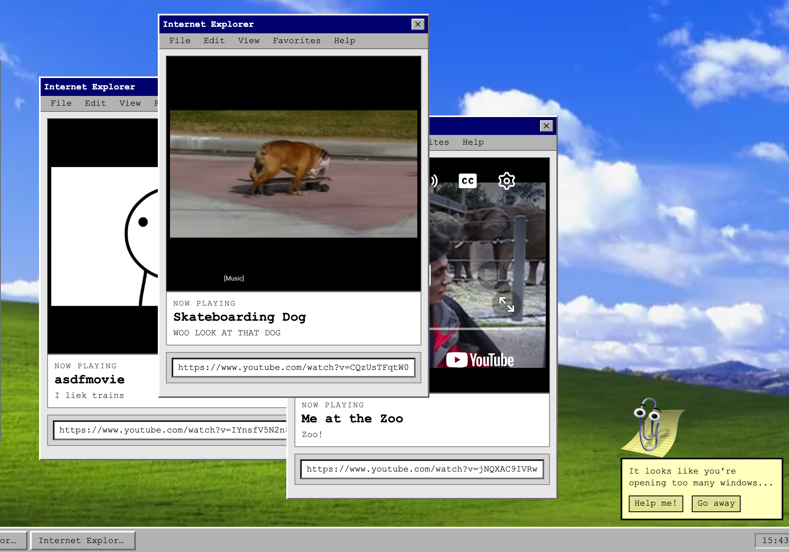

Explore 3 different categories spotlights
Click view more to view entire collection
A sound in the warehouse spooks the worker, leading them around the warehouse to discover where its coming from
Referencing the famous game Minecraft and the poem at the end, exploring topics of nostalgia, rememberance, and forgetting.
Touch Designer project that features a loop of a mirrored deer video, the user intereacts to "move" the deer.

interactive website that allows you to pretend you are in the early 2000s with the infamous Microsoft Clippy.

A repetition of a record player that plays on the idea of "Pop-Art". Modeled and rendered by Me
A rendered scene of an unsettling room with an eye watching. Modeled the eye, couch, lamp, and Turntable